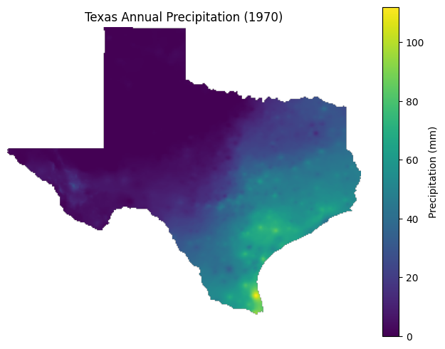
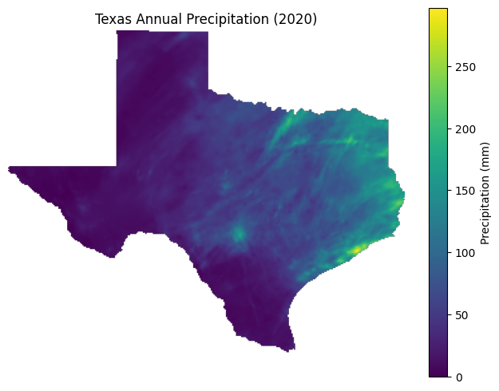

Climate change is not simply making Texas wetter or drier. Instead, it is increasing variability in precipitation. This means that rainfall patterns are becoming less predictable, with larger swings between extremely wet years and extremely dry years. Rather than a steady trend, Texas is experiencing more irregular and extreme fluctuations in rainfall.
What the data shows


The data shows that precipitation in Texas fluctuates significantly from year to year, with no consistent upward or downward trend. Some years experience much higher rainfall than average, while others are much drier, creating a pattern that appears irregular rather than stable.
This variability is the most important takeaway. Instead of gradually becoming wetter or drier, Texas is experiencing wider swings between extremes, making rainfall patterns more difficult to predict.
The second graph above highlights this variability more directly by showing how much precipitation changes from one year to the next. Some years experience large increases in rainfall, while others show sharp declines. These swings are often abrupt, with no consistent pattern over time.
Rather than following a steady trend, precipitation in Texas is highly unpredictable. These significant year-to-year fluctuations suggest that climate change is influencing rainfall through increased variability and instability rather than simple changes in averages. Some of the largest year-to-year changes exceed 10 inches, highlighting how dramatic these fluctuations can be.
Source: PRISM Climate Group (2024).
Spatial patterns of rainfall
While precipitation varies over time, it also varies significantly across space. Different regions of Texas receive very different amounts of rainfall, and these patterns help explain why statewide averages can appear inconsistent.


These maps show that precipitation in Texas is not evenly distributed. Eastern Texas generally receives more rainfall, while western regions remain much drier. This spatial variation is influenced by geography, atmospheric circulation, and proximity to moisture sources such as the Gulf of Mexico.
When combined with the year-to-year variability shown in the graphs above, these spatial differences help explain why rainfall patterns in Texas are complex and difficult to predict. Climate change does not affect all regions in the same way, and understanding these regional differences is essential for interpreting long-term trends.
Source: PRISM Climate Group (2024).
Why rainfall looks so irregular
Unlike temperature, which often shows a clear long-term upward trend, precipitation is harder to interpret. Rainfall naturally varies from year to year because it depends on changing atmospheric circulation, seasonal storm tracks, and regional weather systems. That means average precipitation alone does not always reveal the full climate signal.
Risser et al. argue that precipitation is especially difficult to analyze at local and regional scales because the data is more complex than it is for temperature. They note that precipitation is shaped by “observational uncertainty, large internal variability, and modeling uncertainty,” which makes clear trends harder to detect even when change is occurring. That complexity helps explain why Texas rainfall can look chaotic from year to year.
In other words, the irregular pattern in the graph is not evidence that nothing is changing. It suggests that climate change is affecting rainfall through increasing variability and regional differences, not through one simple statewide average.
Source: Risser et al. (2023).
From variability to extreme events
As variability increases, the likelihood of extreme precipitation events also rises. This means that even if average rainfall stays relatively close to past values, the way that rain falls can still change substantially. More precipitation may come in short, intense bursts, while longer dry gaps separate those events.
Kunkel et al. describe the Great Plains climate, including Texas, as one in which precipitation is already naturally uneven. That existing variability matters because climate change does not begin from a stable baseline. It intensifies a system that already swings between wet and dry conditions.
This helps explain why changing rainfall is so important. Texas is not only seeing irregular annual precipitation totals; it is part of a region where extreme weather already has major consequences. When rainfall becomes more variable, both heavy rainfall and prolonged dryness become more disruptive.
This quote highlights an important distinction. The absence of one simple, obvious trend line does not mean there is no change. It means precipitation change often appears through regional variability and extremes rather than through a clean statewide increase or decrease.
Together, the data and research show that precipitation in Texas is becoming less predictable. Instead of stable seasonal patterns, the state is experiencing stronger swings between wet and dry conditions, making rainfall patterns harder to anticipate and manage.
Sources: Kunkel et al. (2013), pp. 11-14; Risser et al. (2023), pp. 706.
Why predictability matters
One of the most important consequences of increasing rainfall variability is the loss of predictability. Water systems, agriculture, and infrastructure are all designed around expected patterns of rainfall. When those patterns become less reliable, planning becomes far more difficult.
Farmers rely on seasonal rainfall patterns to support planting and harvest cycles. Cities depend on predictable rainfall to manage reservoirs, drainage systems, and long-term water supply. When precipitation becomes more erratic, both excess water and shortages become more difficult to prepare for.
That means the problem is not only how much rain falls, but when and how it falls. Increased variability changes the timing and distribution of rainfall, creating new challenges even when annual totals appear familiar.
Sources: Risser et al. (2023); Kunkel et al. (2013).
Why this matters in Texas
Flooding
Heavier rainfall events increase the risk of flash flooding, road damage, overwhelmed drainage systems, and costly disruption to communities.
Water Management
Unpredictable rainfall makes it harder to manage reservoirs and long-term water supplies, especially when wet years and dry years arrive in sharp succession.
Infrastructure
Stormwater systems, culverts, and other built infrastructure are strained when rainfall arrives in more intense bursts than they were designed to handle.
Agriculture
Farmers must cope with both drought conditions and sudden heavy rainfall, which can stress crops, erode soils, and disrupt planting schedules.
These impacts reflect the growing instability in Texas’s climate system. When rainfall becomes less predictable, both too much water and too little water create serious challenges for communities, ecosystems, and infrastructure.
Sources: Risser et al. (2023); Kunkel et al. (2013).
Next: Drought in Texas
As rainfall becomes more variable and less predictable, Texas is experiencing more severe water stress. Rising temperatures and shifting precipitation patterns together increase the risk of drought across the state.
Go to the Next Page